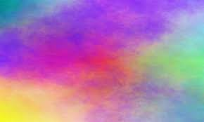

O autoru
Pocetna
Maturski rad
Literatura
Kontakt
Zovem se Katarina Djermanovic. Idem u Devetu gimnaziju "Mihailo Petrovic Alas". Imam 18. godina.
Sto se tice planova nemam ih bas puno. Ima vise stvari koje me zanimaju ali ne mogu da se odlucim.

Evo jedne lepe slike.